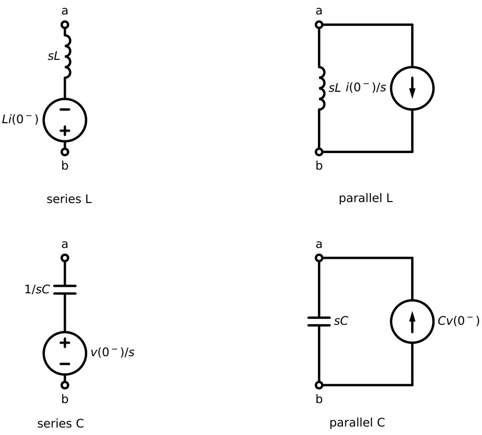
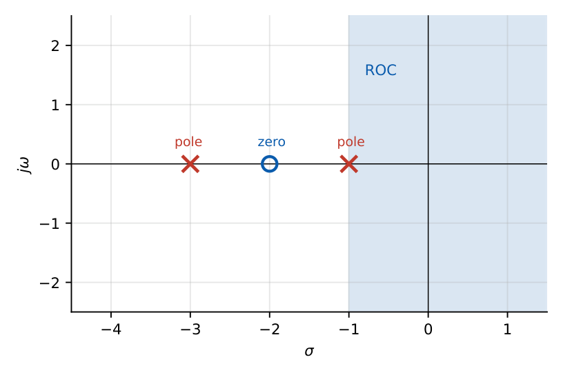
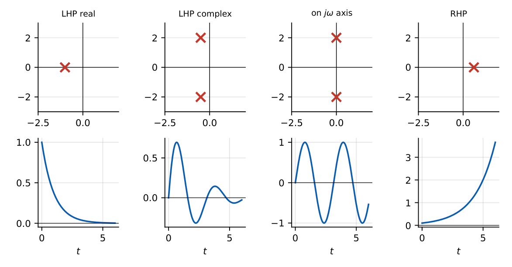

Circuit Analysis Using the Laplace Transform
In this chapter
\(s\)-domain models of R, L, C with initial conditions; transfer functions; poles and zeros; step/impulse response from \(H(s)\); stability from pole locations. Transfer-function questions appear every year.
12.1 The \(s\)-domain representation
Transform every element and every source; KCL, KVL and all circuit theorems hold for the transformed variables \(V(s)\), \(I(s)\).
12.2 Impedance in the \(s\)-domain
\(Z_R=R\), \(Z_L=sL\) (with series source \(Li(0^-)\)), \(Z_C=\dfrac1{sC}\) (with series source \(\dfrac{v(0^-)}{s}\)).
Norton forms: L in parallel with current source \(\dfrac{i(0^-)}{s}\); C in parallel with current source \(Cv(0^-)\).

The equations are \(V_L=sLI_L-Li_L(0^-)\) and \(V_C=\dfrac{1}{sC}I_C+\dfrac{v_C(0^-)}{s}\).
12.3 Initial conditions
With \(s\)-domain models, initial conditions appear as independent sources: there is no need to determine \(x(0^+)\) separately. Use \(0^-\) values (from the circuit before switching).
12.4 Zero-state, zero-input and complete response
- Zero-state response (ZSR): initial conditions \(=0\), input applied: \(Y_{zs}(s)=H(s)X(s)\).
- Zero-input response (ZIR): input \(=0\), only initial conditions.
- Complete \(=\) ZSR \(+\) ZIR. Alternatively natural (roots of the characteristic polynomial) \(+\) forced (poles of the input).
Series \(R\), \(C\) with \(V_s/s\), \(v_C(0^-)=0\): \(I(s)=\dfrac{V_s/s}{R+1/sC}=\dfrac{V_s/R}{s+1/RC}\), so \(i=\dfrac{V_s}{R}e^{-t/RC}\); \(V_C=I/sC=\dfrac{V_s}{s(1+sRC)}\Rightarrow v_C=V_s(1-e^{-t/RC})\).
\(V=10/s\), \(R=2\ \Omega\), \(L=1\) H, \(i(0^-)=0\): \(I=\dfrac{10/s}{2+s}=\dfrac5s-\dfrac5{s+2}\Rightarrow i=5(1-e^{-2t})\) A.
\(i(0^-)=I_0\), no source, \(L\) with \(R\): the inductor model contributes \(LI_0\): \(I(s)=\dfrac{LI_0}{R+sL}=\dfrac{I_0}{s+R/L}\Rightarrow i=I_0e^{-Rt/L}\).
\(R=6\ \Omega\), \(L=1\) H, \(C=0.04\) F, \(v_s=10u(t)\), zero initial state. \(V_C(s)=\dfrac{10}{s}\cdot\dfrac{25}{s^2+6s+25}=\dfrac{10}{s}-\dfrac{10(s+3)+30}{(s+3)^2+16}\), so \(v_C=10-e^{-3t}(10\cos4t+7.5\sin4t)\): the same result as Chapter 10, obtained algebraically.
12.5 Transfer function
\(H(s)=\dfrac{Y(s)}{X(s)}\Big|_{\text{zero initial conditions}}=\mathcal L\{h(t)\}\), where \(h(t)\) is the impulse response.
RC low-pass (\(v_C\) output): \(H=\dfrac1{1+sRC}\). Series RLC (\(v_C\) output): \(H=\dfrac{\omega_0^2}{s^2+2\alpha s+\omega_0^2}\).
Series RLC (\(v_R\) output): \(H=\dfrac{sR/L}{s^2+2\alpha s+\omega_0^2}\) (band-pass).
12.6 Network functions
- Driving-point impedance \(Z(s)=V_1/I_1\) and admittance \(Y(s)=I_1/V_1\) (same port).
- Transfer functions: \(V_2/V_1\), \(I_2/I_1\), \(V_2/I_1\) (transfer impedance), \(I_2/V_1\) (transfer admittance).
- Realisability (Foster/Cauer): for an \(RC\) driving-point impedance, poles and zeros are simple, lie on the negative real axis, alternate, and the critical frequency nearest the origin is a pole. For an \(RL\) impedance the nearest is a zero. For \(LC\): critical frequencies on the \(j\omega\) axis, simple, alternating.
12.7 Poles and zeros
\(H(s)=K\dfrac{(s-z_1)(s-z_2)\cdots}{(s-p_1)(s-p_2)\cdots}\). Poles \(p_k\) are roots of the denominator (natural modes); zeros \(z_k\) are roots of the numerator.

12.8 Step response and impulse response
\(Y_{step}(s)=H(s)/s\), \(Y_{imp}(s)=H(s)\). Steady-state (final) value of the step response \(=H(0)\) if \(H\) is stable.
\(H(s)=\dfrac{10}{s+5}\): \(\tau=0.2\) s; step response \(=2(1-e^{-5t})\), final value \(2\); impulse response \(10e^{-5t}\).
12.9 Stability from poles
| Pole location | Mode | Stability |
|---|---|---|
| Left half plane (simple or repeated) | decaying | stable |
| Simple pole on \(j\omega\) axis | sustained oscillation / constant | marginal (BIBO-unstable) |
| Repeated poles on \(j\omega\) axis | growing polynomial | unstable |
| Right half plane | growing exponential | unstable |
BIBO stability (bounded input \(\Rightarrow\) bounded output) requires all poles of \(H(s)\) (after cancellation) in the open left half plane, equivalently \(\int|h(t)|dt<\infty\).

(i) A pole–zero cancellation can hide an unstable pole in the transfer function while the internal mode still grows. (ii) \(H(s)=1/s\) is not BIBO stable (integrator: bounded input \(u(t)\) gives a ramp). (iii) Marginal stability is not BIBO stability.
Q1. The \(s\)-domain impedance of a \(2\) H inductor is (A) \(2/s\) (B) \(2s\) (C) \(s/2\) (D) \(2\).
Q2. A system with \(H(s)=\dfrac1{(s+1)(s-2)}\) is (A) stable (B) marginally stable (C) unstable (D) oscillatory.
Q3. The impulse response of \(H(s)=1/(s+3)\) is (A) \(e^{3t}u(t)\) (B) \(e^{-3t}u(t)\) (C) \(u(t)\) (D) \(\delta(t)\).
Answers: Q1 (B). Q2 (C): pole at \(+2\). Q3 (B).
Q4. A series \(R=2\ \Omega\), \(L=1\) H circuit is connected to \(10\) V DC at \(t=0\) with \(i(0^-)=0\). The current at \(t=1\) s is (A) \(5\) A (B) \(4.32\) A (C) \(3.16\) A (D) \(10\) A.
Q5. The DC gain of \(H(s)=\dfrac{s+2}{(s+1)(s+3)}\) is (A) \(1\) (B) \(2/3\) (C) \(2\) (D) \(1/3\).
Answers: Q4 (B): \(5(1-e^{-2})=4.32\). Q5 (B).
Q6. For the RL step example, \(i(1\text{ s})=\) A (two decimals).
Q7. \(H(s)=\dfrac{100}{s^2+10s+100}\): the damping ratio is .
Answers: Q6: \(4.32\). Q7: \(\omega_n=10\), \(2\zeta\omega_n=10\Rightarrow\zeta=0.5\).
Q8. Which systems are BIBO stable? (A) \(\frac1{s+2}\) (B) \(\frac{s}{s^2+4}\) (C) \(\frac{1}{s^2+2s+2}\) (D) \(\frac{1}{s(s+1)}\).
Answers: Q8: (A), (C). (B) marginal, (D) has a pole at \(0\).
(i) Wrong polarity of the initial-condition source. (ii) Using \(0^+\) instead of \(0^-\). (iii) Applying \(H(s)\) with nonzero initial conditions (it only gives the zero-state response). (iv) Forgetting that \(Z_L=sL\) (not \(j\omega L\)) in the \(s\)-domain.
T1. Find \(H(s)=V_o/V_i\) for a series \(R\) then shunt \(C\) (\(V_o\) across \(C\)) and its pole.
T2. A system has poles at \(-1\pm j2\) and a zero at \(-3\). Is it stable?
Answers: T1: \(H=\dfrac1{1+sRC}\), pole at \(-1/RC\). T2: yes, poles in the LHP.
- \(R\); \(sL\) (+ \(Li(0^-)\) series source); \(1/sC\) (+ \(v(0^-)/s\)). \(H(s)=\mathcal L\{h\}\); ZSR \(=HX\).
- Step response \(H(s)/s\); DC gain \(H(0)\); impulse response \(=h(t)\).
- Poles in the open LHP \(\Rightarrow\) BIBO stable; \(j\omega\)-axis simple \(\Rightarrow\) marginal; RHP \(\Rightarrow\) unstable.
- RC impedance: nearest critical frequency is a pole; RL: a zero.
- Complete response \(=\) ZSR \(+\) ZIR \(=\) natural \(+\) forced.